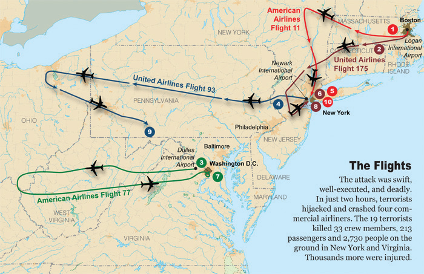
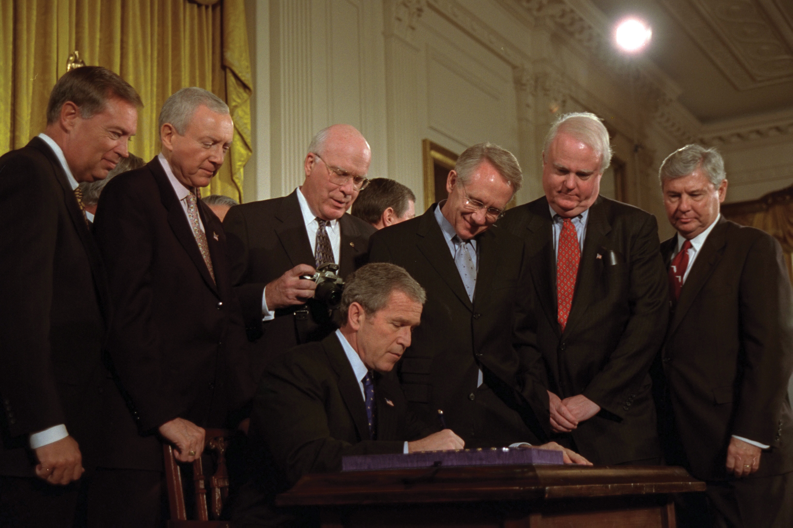
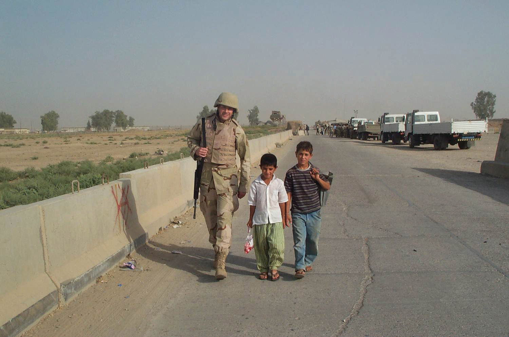
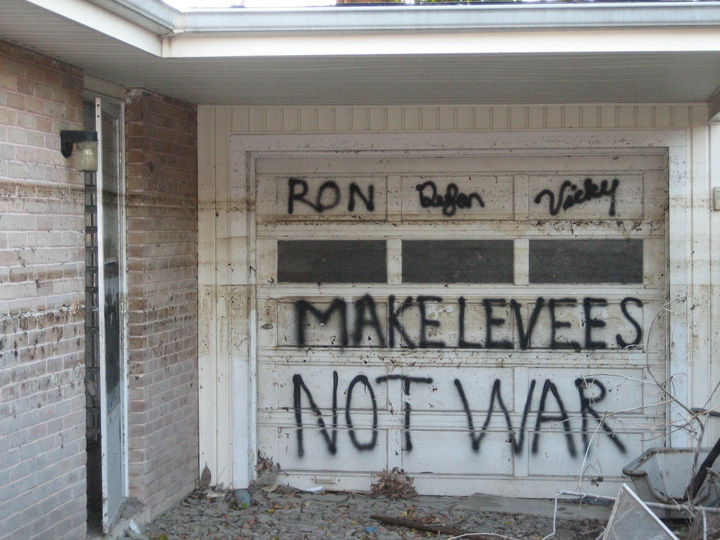

The primaries leading up to the 2000 election produced few surprises, with Clinton’s vice president Al GoreA two-term vice president under Bill Clinton who lost the controversial 2000 presidential election to George W. Bush in 2000 despite receiving more popular votes. and the Republican governor of Texas George W. BushSon of former President George H. W. Bush, he was the 43rd president of the United States from 2001 to 2009. winning the nominations of their parties. The media declared Bush the heir apparent to the Republican Party, and only Arizona senator John McCain came close to challenging this prediction. Bush’s campaign hoped that the public would associate Gore with the infidelity of Clinton, a man he so loyally defended throughout the president’s impeachment hearings. The risk of this strategy, however, was that the public might also associate the vice president with an administration that had converted budget deficits into surplus during eight prosperous years.
Like Clinton, Al Gore had high approval ratings and experience leading both domestic and foreign initiatives, such as the Kyoto treaty on global warmingA global agreement to reduce greenhouse gas emissions that has been signed by nearly every nation except the United States. The agreement was signed in Japan in 1997 and was largely shaped by representatives of the United States but was strongly opposed by the Bush administration due to concerns that following its provisions would severely harm the economy.. However, Bush’s campaign succeeded in putting Gore on the defensive regarding his relationship with Clinton, even to the point that the vice president sought to distance himself from the administration of which he had been such an integral part. Bush and the Republican Party deftly connected Clinton’s extramarital affairs with abortion, gay rights, and liberal opposition to prayer in schools. The strategy had the advantage of playing to verifiable evidence of moral decay in the White House. Rather than point out the flaws in this assessment, Gore chose to run a rather vanilla campaign that avoided controversy. This decision was likely influenced by political observers who predicted that Gore would win the election based on his superior experience and intellect. Early polls agreed, predicting that the Democrats would win a very close race. Given the controversy surrounding the election results, some would argue that these early polls were accurate.
On paper, George W. Bush was hardly the kind of candidate that should worry the Gore campaign. While Al Gore had navigated international treaties, Bush had barely left the country. He was known mostly for his jovial and often juvenile disposition, a self-confessed “party boy” who had found work through his father’s connections in the oil industry. Gore had also benefitted from family connections. However, the vice president also had a reputation for intelligence and hard work that was the antithesis of the reputation of the former president’s son. In response, the Bush campaign waged an aggressive fundraising campaign and used its unparalleled resources to highlight the affable personality of Texan George Bush in contrast to the allegedly “aristocratic” Al Gore.
The technique was a mainstay of nineteenth century politics and proved equally effective in the new millennium as the Bush campaign slowly chipped away at the Democratic candidate’s lead. Meanwhile, Bush seemed warm and genuine in a number of well-conceived appearances and political advertisements. Although the result of campaign disclosure requirements, voters appreciated the apparent straightforwardness of Bush’s advertisements, which ended with the phrase, “I’m George Bush, and I approved this message.”
On the eve of the election, the polls were too close to predict a winner. Many Democratic leaders urged the progressive third-party candidate Ralph Nader to drop from the race. They believed that the 2 to 3 percent of voters who were predicted to vote for Nader would support their candidate. And they predicted that, without these voters, their candidate might not win key states such as Florida where polls showed Gore and Bush as dead even.
The media portrayed the election as evidence that America had become divided into Democratic “blue” states and Republican “red” states. The phenomenon of a candidate running well in a particular region was as old as the nation itself, yet election returns did seem to validate the idea of a liberal and conservative divide. Metropolitan districts tended to vote for Gore, while rural areas could usually be counted on voting Republican. Gore had received half a million more votes than Bush, but America still abided a system that awarded every electoral vote to the candidate who polled the most votes in a particular state.
The popular vote in most states was very close, a fact that ran counter to the image of polarized “red” and “blue” states. However, in Florida the vote was so close that state officials determined that further investigation of voting procedures and counting methods was necessary. Bush had originally led by about 2,000 votes, but an investigation conducted by the state’s predominantly Republican leadership had reduced that margin to 150. The results throughout the rest of the nation were also so close that the winner would be decided by the recount in Florida. However, the Bush campaign won an injunction from the US Supreme Court ordering the recount to stop. As a result, all of Florida’s electoral votes went to George Bush, and he became the next president.
The Supreme Court’s decision shocked many Americans, including the four Supreme Court justices who dissented and the Florida Supreme Court who had ordered the recount. Later investigations by journalists generally agreed that Bush would have still won the vote in Florida had the recount continued. Others believed that Ralph Nader had been the “spoiler” as the vast majority of his nearly 100,000 votes in Florida alone would have gone to Gore had Nadar’s name not been on the ballot. Most Americans agreed it was time to end the Electoral College. However, the indignation of these voters regarding an election that appeared to be decided by attorneys and voting irregularities rather than the will of the people soon subsided. George W. Bush was not the first president to be elected by a minority of voters. In addition, the Electoral College could only be eliminated by passing an amendment to the Constitution. This would require the support of political leaders in large states that benefited from the Electoral College system. Meanwhile, if the new president supported a campaign to eliminate the system that had resulted in his election, it might support detractors who still believed Bush had stolen the election from Gore.
Bush began his presidency with a brilliantly conceived speech in which he humbly promised an inclusive approach. The speech disarmed many of his critics, at least temporarily. Bush’s methods and policies soon reanimated the left’s objections as the new president moved far to the right of the moderate conservatism that typified his father’s administration. Bush proposed and won approval for the largest tax cut in the nation’s history, reducing tax receipts by $1.3 trillion. What angered the left most was that nearly all of these reductions benefitted the wealthiest 5 percent of taxpayers who were in the highest tax brackets. Bush also sought to completely eliminate estate taxes—a tax that only affected the heirs of wealthy descendants. Finally, Bush approved reductions in dividend and capital gains tax rates that brought the maximum rate down to 15 percent—a rate even Reagan had rejected as being too low.
Bush differed from Reagan in another important way. Although both utilized the moralistic language of the New Right, Bush made the support of socially conservative views on abortion, homosexuality, birth control, and school prayer a leading priority. He also supported controversial programs, such as private school vouchers. This program encouraged middle and upper-class families to withdraw their children from public schools by using tax dollars to offset some of the tuition charged by private schools. Opponents pointed out that such a system would cripple the nation’s public school system, reduce civic participation, and harm the children of less affluent parents who could not afford private school tuition even with federal vouchers.
Bush demonstrated a similar willingness to withdraw from the international community. The Bush administration reversed the postwar tradition of building international coalitions and working through agencies such as NATO and the United Nations. In addition to the sudden refusal to participate in environmental treaties like Kyoto that the United States had actually initiated, Bush also abrogated the antiballistic missile treaty signed by Richard Nixon. Bush also ignored bipartisan support for treaties restricting the use of land mines and testing nuclear weapons. In contrast to the moderate Republican and Democratic leadership of his father and Bill Clinton, George W. Bush had moved the federal government far to the right of center.
Bush also rescinded most of Clinton’s executive orders dealing with environmental protection, shocking the world with his declaration that America would not participate in the Kyoto Protocol on global warming. Most of Bush’s decisions regarding the environment produced outrage among the left, including his support of a controversial law that would permit oil drilling in national wildlife refuges. Legislation deregulating the oil industry passed only after removing these provisions. Pundits were quick to point out that Bush and Cheney’s connections in the oil industry formed the basis of their wealth and political connections. Bush’s affable personality and folksy populist appeal insulated him from some of this criticism during his first years in office. More troubling for the president was the growing disapproval of his policies among moderate Republicans, some of whom even left the Republican Party in protest.
On the morning of September 11, 2001, nineteen terrorists seized control of four commercial airliners flying over the East Coast. The hijackers had attended flight schools and had planned a suicide mission that was calculated to cause the greatest physical destruction and psychological terror on the citizens of the United States. Two of the aircraft crashed into the Twin Towers of the World Trade Center in New York City. A third crashed into the Pentagon in Washington, DC. The forth plane was overtaken by passengers before it could reach the destination the terrorists intended to destroy, crashing instead in a field in Pennsylvania. These four plane crashes resulted in the deaths of more than 3,000 people on September 11, including nearly 400 emergency responders. The attack was approximately twenty times more destructive than the Oklahoma City bombing and was greeted by America’s enemies as a tremendous success. But whether the attack achieved its objective of terrorizing Americans remained a question that could only be answered by the response of the American people.
Like most life-changing events, September 11 brought out the best and worst in the American people and their government. When the Bush administration identified Al QaedaAn international terrorist network responsible for the September 11 attack, Al Qaeda claims to be waging “jihad” (a holy war) against the West and the United States. as the organization responsible for the attack, many Americans responded with rage directed at anyone they suspected might be Muslim or from the Middle East. However, most Americans responded with displays of patriotism and rejected populist anger, choosing instead to donate money to relief efforts and provide for the families of victims. Millions flooded local blood banks, gave generously to the American Red Cross and other relief agencies, and found extra time to volunteer with community organizations or reach out to estranged friends and family members. Military officials feared that volunteer enlistments would end, given the likelihood of mandatory deployments in the future. Instead, they found recruiting offices filled with young people willing to risk everything for an opportunity to serve their country.
Figure 14.9
The September 11 attacks led to the deaths of 3,000 innocent people, including 400 emergency workers. This map shows the flight paths of the four hijacked planes used in the terrorist attacks.
One of the most unlikely controversies arose from the outpouring of support for charitable groups, some of which soon found that they had received more donated resources than they could effectively use to aid the victims of the attacks. Other groups sought to aid the city of New York and those who had been only indirectly affected. For example, the economy of New York City was especially vulnerable as tens of thousands of workers were without employment while the city spent millions of dollars dealing with the crisis. The national economy also suffered temporary setbacks. The stock market reopened with dramatic losses as some investors fled in the wake of uncertainty. Other Americans felt it was their patriotic duty to buy stocks or otherwise stimulate the economy through personal spending in support of the millions of employees who worked in the tourist and airline industries that had suffered in the wake of the attacks. Most Americans responded with relative calm, spent a few extra moments with loved ones, donated money and blood to local charities, purchased flags in record numbers, and went back to work.
September 11 was more than a life-changing moment for most Americans; it also defined an era and drove the history of the early twenty-first century more than any other event. Americans of various political persuasions united, at least temporarily, behind their president and his administration’s declaration of war against terrorism. An undeclared war in Afghanistan also received popular support, at least initially, as military leaders attempted to find Al Qaeda leader Osama bin Laden and those who had supported his terrorist network. Bin Laden was one of over fifty children born to a billionaire in Yemen whose fortune had been made in construction fields related to the oil industry. Bin Laden inherited much of his father’s wealth but turned from his family’s secular orientation. Although he had technically fought on the same side as the US-backed Mujahideen who fought against the Soviet occupation of Afghanistan, bin Laden had a deep hatred of the West. Although the West and its financial system was the source of his family’s wealth, he believed the West was also responsible for the decline of his version of Islam in the Middle East.
The existence of a well-funded and well-organized terrorist network presented both new opportunities and challenges for America’s intelligence and military. In contrast to individual terrorists who were practically impossible to detect until they committed their actions, bin Laden’s extensive resources provided US intelligence agents with targets they could track. On the other hand, the existence of a well-funded network operated by men who were often well-educated and from wealthy or middle-class backgrounds made tracking these men more difficult. Bin Laden’s network was an interconnected system of terrorist cells averaging five individuals deeply embedded in American society. Usually only one member of the cell even knew the other members and served as the point of contact for other cells. While this individual linked the members of the cell to a larger network, they seldom knew how to contact anyone else in the organization. As a result, communication only flowed downward—a safeguard against one member of the organization revealing the existence of the leaders or other cells. Many of these terrorists had been in the United States for years, waiting until they were contacted with instructions.
As a result, the Bush administration declared that new and more aggressive methods were needed to counter the threat of terrorism. Congress responded in October 2001 by approving the Patriot ActOfficially known as the Uniting and Strengthening America by Providing Appropriate Tools Required to Intercept and Obstruct Terrorism Act of 2001, the Patriot Act expanded the powers of the federal government to legally use surveillance against any individual suspected of possible involvement in international or domestic terrorism.. This law expanded the powers of the federal government, permitting the use of covert surveillance against persons suspected of having connections to a terrorist plot or network. Opponents countered that the Patriot Act was an unwarranted intrusion against the right of privacy. Others feared that the Patriot Act was only the first in a series of laws that might restrict the rights of citizens. Some believed that the Patriot Act was a peculiar reaction to counter terrorists, especially as the president repeatedly claimed that the terrorists hated Americans for the freedoms they enjoyed.
Figure 14.10
Surrounded by leading Republican congressmen, President George W. Bush signs the controversial Patriot Act into law on October 26, 2011.
While many civil rights violations would surface in later years, there was little curtailment of free speech. For example, only a handful of newspapers refused to print a Boondocks comic strip that suggested the Reagan administration’s support of the Mujahideen during the 1980s had aided Al Qaeda. Conservative commentators such as Anne Coulter expressed violent and virulent language toward American Muslims but were also not censored. Radical poets such as Amiri Baraka received threats for an uncompromising poem titled Somebody Blew Up America. Yet neither Baraka nor the right-wing commentators who called for retaliation against Muslims were censored by the government. The first line of Baraka’s poem continues to resonate with Americans as they attempt to balance freedom and security. “All thinking people oppose terrorism—both domestic and international,” Baraka exclaimed, “but one should not be used to cover up the other.”
Bush demanded that the Taliban, a regime that controlled much of Afghanistan, hand over Al Qaeda leader Osama bin Laden. When this demand was ignored, the United States launched air strikes against Taliban and Al Qaeda strongholds throughout Afghanistan in October of 2001. These attacks were followed by American and British ground forces that quickly overwhelmed Taliban fighters and took control of major cities, such as the Afghan capital of Kabul. However, these troops were unable to capture bin Laden or his supporters as they fled to the remote and mountainous terrain along the Afghan-Pakistan border.
Military resources that might have resulted in the capture of bin Laden and elimination of his terrorist network were soon diverted to Iraq by early 2003. Disregarding the conflicting worldviews and deep distrust between Iraqi dictator Saddam Hussein and Al Qaeda leader Osama bin Laden, the Bush administration became convinced that Hussein was somehow involved with the September 11 plot. Bush also became increasingly convinced that Saddam Hussein was developing or already possessed chemical, biological, or nuclear weapons he would share with terrorist groups such as Al Qaeda. Afghanistan became a holding action where depleted regiments sought to defend a beleaguered Afghan government. US forces in Afghanistan also sought to prevent the growth of the Taliban and Al Qaeda rather than eliminate them, while the Bush administration shifted the bulk of military resources to the invasion and occupation of Iraq.
History provides few reasons to believe that the Iraqi leader was working with Al Qaeda. Saddam Hussein was deeply opposed to the Islamic fundamentalism of bin Laden. In fact, Hussein had led Iraq to the brink of civil war in his efforts to purge the influence of bin Laden’s ideology from his nation. Bin Laden viewed Hussein as an “infidel.” So deep was bin Laden’s dislike of the Iraqi dictator that he had met with Saudi leaders following Iraq’s invasion of Kuwait in 1991 and offered to personally lead a crusade of 100,000 Muslim warriors against Hussein.
At the same time, however, history could also offer little to explain or predict the attacks of September 11. Saddam Hussein had long sought weapons of mass destruction the Bush administration worried he might now possess. Even if an alliance with bin Laden was unlikely, Hussein was a danger by himself. The Iraqi dictator had used chemical weapons in the past, harbored anti-American sentiment, and had supported a terrorist plot to assassinate George H. W. Bush when he was president. Iraq was part of “an axis of evil,” the younger Bush explained to the American public. For George W. Bush, the lesson of September 11 seemed to be the importance of taking proactive steps against America’s enemies. Closely related to this idea was the foreign policy directive that would soon be known as the Bush DoctrineRefers to the foreign policy of George W. Bush that supported the use of US military power to prevent perceived threats to national security, even if those possible threats are not immediate and few or no other nation was willing to support these actions.: the United States would wage preemptive attacks—with or without the support of the United Nations and its allies—if America’s leaders believed such an action was necessary to counter a credible threat to their nation’s security.
The Bush administration sought to convince a wary nation to apply this doctrine to Iraqi dictator Saddam Hussein. Secretary of Defense Donald RumsfeldSecretary of Defense under Presidents Gerald Ford and George W. Bush, Rumsfeld was an outspoken supporter of the decision to invade Iraq in 2003. His resignation was demanded by a number of military officials, and Rumsfeld resigned just after the 2006 election. had changed his views from 1991 when he had supported the decision to leave Hussein in power rather than face the difficulties of occupation and reconstruction. Vice President Dick CheneyVice president under George W. Bush from 2001–2009 and Secretary of Defense during the previous Bush administration, Cheney was a leading advocate for the invasion of Iraq in 2003, although he had also supported the decision to withdraw from Iraq following Operation Desert Storm. was even more determined that Iraq must be invaded, declaring in several press conferences that American intelligence analysts had determined that Hussein possessed weapons of mass destruction (known colloquially as WMDs) when in fact such reports did not exist. Secretary of State and former General Colin PowellA well-respected general during Operation Desert Storm who was appointed as Secretary of State by George W. Bush, Powell strongly opposed the decision to invade Iraq in 2003, challenging other officials to produce clear objectives and strategies for such an operation while encouraging the president to only consider such a course of action if it were supported by the United Nations. disagreed, at least at first. He believed that invading Iraq was unwise and branded his own administration’s efforts to find evidence that Iraq was a bigger threat than Al Qaeda as “lunacy.”
Despite Powell’s efforts, Bush’s inner circle appears to have already made the decision to invade Iraq. The president ordered Rumsfeld to prepare secret plans for the invasion less than three months after the September 11 attacks. These preliminary plans were created without the input of military leaders or Congress. In fact, the Joint Chiefs of Staff were not even aware the Bush administration was contemplating the invasion of Iraq for the next six months. In the meantime, Bush and Cheney tried to rally public support for the idea of a preemptive strike by creating the connection in the public mind between Hussein’s previous bellicosity and his 1998 decision to expel UN weapons inspectors from Iraq. By the end of 2002, the administration had changed its message from one that counseled Iraq might have chemical and biological weapons to one that declared Hussein not only possessed these WMDs but was also on the verge of creating a nuclear arsenal. In the wake of the 9/11 attacks, most Americans were still upset at the lack of preemptive action to stop Osama bin Laden. If preemptive action could stop Hussein from launching a devastating attack, Americans asked, what possible argument could be made for doing nothing?
At the same time, reports circulated indicating the unlikelihood that Hussein presented a serious threat to the United States. Some military analysts worried that an American invasion of Iraq might provide Hussein a pretext to use weapons of mass destruction, or any of the modern weapons he was known to possess. An invasion by the world’s leading military power might even make it appear that Hussein used these weapons in defense of his beleaguered nation.
Powell might have gone public with his reservations or resigned in protest and hoped that his departure might produce a new sense of caution in the White House. Instead, Powell focused his efforts toward advising the president of the dangers and liabilities he believed Rumsfeld and Cheney were minimizing. The invasion would likely succeed much like it had in 1991, Powell counseled the president. After the invasion, Powell cautioned, “you will be the proud owner” of a nation without a government or infrastructure. The United States would then be responsible for the welfare of the Iraqi people, Powell continued, many of whom harbored deep resentments toward the West. “You break it, you own it,” the secretary of state concluded in summation.
Powell also advised the president that the United States should only consider an invasion after first confirming the existence of WMDs and securing the support of the United Nations. The coalition that paired Western and Arabic nations against Hussein in 1991 had been the key to its international legitimacy, Powell argued. Even if WMDs were found to exist, Powell implored, the president must at least follow his father’s path of coalition building before considering a second Iraq invasion.
Bush agreed to seek a UN resolution requiring Hussein to submit to an international inspection team that would search for WMDs. The Security Council approved the resolution unanimously, and Hussein agreed to permit the inspectors in the country. The inspectors did not find any evidence of WMDs, a situation that placed the Bush administration in a difficult position after its earlier rhetoric. However, the Iraqi dictator did not cooperate with many of the inspectors’ requests as the UN resolution required. As a result, there appeared a high probability that WMDs were hidden in a location the inspectors were forbidden to search. As Bush supporters explained, the absence of positive evidence proving the existence of WMDs was not the same as evidence proving WMDs were not present.
Determined not to allow anything to deter its previous decision, the Bush administration ignored intelligence reports by the United Nations, CIA, and US military; disregarded the advice of Secretary of State Colin Powell; and launched the invasion of Iraq on March 19, 2003. “We can choose to meet this threat now,” Bush counseled the nation, “before it can appear suddenly in our skies.” The president’s rhetoric was clearly meant to connect Operation Iraqi FreedomBegan with the invasion of Iraq in March 2003 and continues to the present. The stated goal of Operation Iraqi Freedom is to replace an autocratic dictator who might have threatened the security of the United States with a peaceful and stable democratic government. to the September 11 attacks. Most Americans were unaware of the tenuous connections between Hussein and bin Laden, but sensed both uncertainty and déjà vu as they once again watched rockets hit Baghdad on CNN. Still, most Americans supported their president and his decision to remove Saddam from power due to the possibility that he might use WMDs against their nation. At the same time, most also indicated reservations about the long-term consequences of what they were witnessing. Even if there were no weapons of mass destruction, they hoped that removing Saddam Hussein might promote peace and stability in the region.
In stark contrast to the first Gulf War, only Britain provided significant military support. A handful of other nations sent token forces to participate in the American-led “coalition of the willing,” but many of these demanded US aid in exchange. The devastating “shock and awe” of US airpower was very similar to the first Gulf War, however. Combined with a rapid deployment of ground forces that converged upon Baghdad, Iraqi troops were once again overwhelmed and surrendered en masse. Others simply threw down their weapons and attempted to blend into the civilian population.
Many Iraqi civilians cheered the Americans as liberators or simply displayed a calculated neutrality to an outcome they knew they could not alter. After six weeks of military operations, 138 US soldiers had lost their lives, but Iraq was firmly under US control. Americans and Iraqis were hopeful that efforts to draft a new constitution and hold democratic elections would usher in a new era of freedom and prosperity for their nation. On May 1, 2003, a jubilant George Bush stood on the deck of an aircraft carrier and declared that “major combat operations in Iraq have ended” in front of a banner that read “Mission Accomplished.” For a brief moment, even the president’s critics happily concluded that Operation Iraqi Freedom might just be the first step toward stability and democracy in the Middle East.
A few months later, Bush’s premature declaration of victory became fodder for those same critics. Rumsfeld’s invasion plans failed to prepare for the emergence of an opposition movement and neglected provisions for police and public services. The Bush administration’s fateful decision to disband the Iraqi military and police created a power vacuum that the 130,000 US troops struggled to fill. Priceless relics were stolen from museums while the nation’s civilian infrastructure was thrown into chaos. Iraqi armories were raided for weapons by insurgents loyal to Saddam Hussein and other anti-US factions, all of whom had managed to evade capture by US forces. Anti-US sentiment rose quickly as food shortages, water and power outages, and looting took its toll on the largely jobless civilian population. Military and state department officials had prepared for each of these problems. However, most of their advice had been disregarded by Bush’s inner circle of advisors who equated constructive criticism with disloyalty. Even commonsensical suggestions to protect US soldiers by adding armor to vehicles or ensuring adequate numbers of bulletproof vests went unheeded. Without adequate resources or training, soldiers who did not speak Arabic or Kurdish did their best to act as civil engineers, police, and providers of other vital services.
Despite the lack of material support or adequate training, US troops rallied and eventually stabilized most of the nation. However, insurgents who opposed the US occupation emerged as a major obstacle to the transition between dictatorship and democracy. US military fatalities soon doubled after Bush’s declaration of victory. Insurgents used stolen and smuggled rockets and small arms alongside improvised explosive devices (IEDs) that were set to explode on roadsides or in the midst of the civilian population. Recruitment centers for the US-trained Iraqi police were especially targeted. Ironically, the violence against Iraqis prevented the departure of US forces who had hoped to oversee a peaceful and rapid transition toward self-government. Fatalities among large numbers of Iraqi civilians and a few US soldiers became daily occurrences.
Figure 14.11
A US soldier and two children walk together down a road in Kirkuk, Iraq, in 2005. Similar to previous US military operations, deployed troops often used their own pay to purchase things that local children needed such as school supplies and sports equipment. Of course, the most popular item among children was candy, as indicated by the large bag (sent by this soldier’s family) that is being distributed by one of the children.
A year later, most Americans still supported the decision to invade Iraq. The American public was especially supportive of the men and women of the US armed services who were daily sacrificing their lives for a mission their commander-in-chief explained only in the vaguest terms. A nascent antiwar movement began to emerge, and some even made comparisons between Iraq and Vietnam. However, even those who opposed the war usually phrased their opposition in terms of support for the troops. The respect shown to soldiers demonstrated a marked difference in the way Americans viewed the military in the early twenty-first century compared to previous eras.
Despite the hardships, the troops continued to support one another and the mission they hoped would eventually end with their safe return and peace for the Iraqi people. Others simply rallied around support of one another. With the lack of clear guidance and in a world where the battlefront was all around them, the only thing these troops could trust for sure was each other. Even if their leaders could not agree on why they were there, these men and women shared a soldier’s faith that together they could achieve any mission.
Bush’s tax cuts combined with rising military spending to produce soaring deficits. The President’s evasiveness to questions about WMDs and exit strategies following the invasion of Iraq led many to question whether the Bush administration had manipulated facts and led the nation into a war it had not prepared for. Many military leaders quietly opposed the invasion of Iraq because it had weakened the hunt for Al Qaeda in Afghanistan. Uncertainty toward Iraq, which was daily descending into a civil war between Shiites and Sunnis led many voters to conclude that the President failed to prepare its military for the realities of occupation.
The 2004 presidential election pitted Bush against Senator John Kerry of Massachusetts. While questions surfaced about Bush’s service in the National Guard, John Kerry was wounded three times and received medals for bravery during the Vietnam War. Kerry also joined the antiwar movement upon his return, believing along with many veterans that the Johnson and Nixon administrations had deceived the nation regarding Vietnam. In response, the Bush campaign decided to attack Kerry’s military record through an elaborate deception.
Leading Texas Republican donors bankrolled a group called Swift Boat Veterans for Truth, which enrolled Vietnam veterans, most of whom had never met Kerry. The group then sponsored numerous television ads that claimed Kerry’s honorable service record and medals for courage were based on lies. Kerry and dozens of veterans who served with him attempted to refute the ads, and the SEC later fined the organization. However, because Kerry had been such a prominent antiwar activist, many Americans accepted the image of Kerry’s service as less than honorable. The attack on Kerry added a new term to the political lexicon. “Swiftboating” entered the dictionary as a strategy based on spreading negative lies about one’s opponents.
One of the consequences of the swift boat deception was that Kerry decided to avoid any discussion of military affairs. This included criticism regarding the administration’s handling of the war in Iraq and the hunt for bin Laden. It also meant that Kerry did not challenge Bush with questions about the decision to invade Iraq. Polls once again predicted a close election. Bush advisor Karl Rove and other national Republican leaders counseled GOP supporters in each state to place laws barring gay marriage on state and local ballots as a means to ensure that every conservative in the nation voted in the 2004 election. The strategy proved effective as voter turnout was the highest since the 1960s. Bush prevailed with 286 electoral votes to Kerry’s 252.
On August 29, 2005, Hurricane Katrina devastated New Orleans and dozens of surrounding communities in Mississippi and Louisiana. Around 2,000 people perished throughout the Gulf Coast, with the highest rate of fatalities occurring in New Orleans. The city was almost completely destroyed as the storm crested over the flood walls. Because the city lies below sea level, tens of thousands of New Orleans residents who had been unable to heed the evacuation order were now stranded and without food or drinkable water.
Figure 14.12
A New Orleans resident contrasts the use of government money to fund war in Iraq while the city was left without adequate levees that could have prevented the flood. The Bush administration came under heavy criticism for its delayed response to Hurricane Katrina.
For the first several days, emergency services were delayed or so disorganized that they provided little assistance. Because the storm had been forecasted well in advance, the Federal Emergency Management Agency (FEMA) and the Bush administration shouldered much of the blame for the failed preparations and response to the storm. New Orleans residents had long demanded more adequate protection against a hurricane, and the poorest neighborhoods were incredibly vulnerable to flooding. Americans watched in disbelief as news crews showed images of hundreds of stranded citizens. They were especially enraged to see opportunistic criminals who thwarted rescue efforts while other citizens who tried to provide aid were turned back by FEMA officials. Because the majority of those left in New Orleans were poor African Americans, Katrina revealed the continued inequalities of race and class, as well as the cavalier attitude of many in the federal government who belatedly responded.
Similar indifference was displayed by the Bush administration regarding the postcolonial power struggles in Africa. The Republic of the Sudan was host to political unrest, which had combined with ethnic and religious strife for much of the late twentieth century. The isolated region of Darfur in western Sudan suffered from underdevelopment. In addition, a series of wars between area nations and the historic conflict between Muslim and other residents of Darfur brought added suffering to the people of this region. In addition, Sudanese oil profits were funneled to local militias that sought to control the region. The resulting violence led to hundreds of thousands of deaths while 2 to 3 million residents of Darfur became refugees.
Absent a clear strategic or economic interest in the conflict, the United States and the United Nations avoided involvement beyond limited humanitarian aid. Private citizens in America and abroad sought to make up the difference with personal contributions. More importantly, the African Union sent thousands of peacekeepers into the region. The conflict continues to this day. Despite the fact that many rebel groups had vowed to continue fighting, many hoped that a cease-fire signed in 2010 would somehow lead to a restoration of peace in Darfur as well as the rest of the Republic of the Sudan. Many critics of the United States and the West cite Darfur as another example of the failure of the leaders of the developed world to secure the goodwill and support of the Muslim world.
Despite these missed opportunities to promote global stability, nearly all Muslims remain strongly opposed to Al Qaeda and other extremists. In 2004, the 9/11 Commission revealed that the Clinton and Bush administrations had failed to respond to credible reports that a terrorist attack was being planned. It also demonstrated that there was not a meaningful connection between Al Qaeda and Iraq. Other investigations had concluded that there were neither WMDs in Iraq nor credible evidence that Hussein was attempting to obtain such weapons. News of the absence of WMDs surfaced by 2006 just as news that 3,000 US soldiers had died in Iraq. The following year, a controversial surge of US forces increased the number of troops in Iraq from 130,000 back to 160,000 troops.
The surge was heavily criticized by the political left, but appeared to have been successful in reducing violent attacks in Iraq. However, reports of the torture and even rape and murder of Iraqi civilians also surfaced in Bush’s second term. In addition, many Americans joined those around the world who protested the US military’s indefinite detainment of suspected terrorists without trial in a military prison in Guantanamo Bay, Cuba. Evidence that some of these prisoners were also tortured combined with the unilateral nature of the war to reduce American standing in the world. Critics even claimed that America’s wars in Afghanistan, and Iraq, were winning converts to Al Qaeda and other terrorist organizations. Others feared that the deployments reduced the ability of US forces to respond to other global threats. These critics were concerned by the nonresponse of the US military after the former Soviet state of Russia invaded another former Soviet state in the summer of 2008.